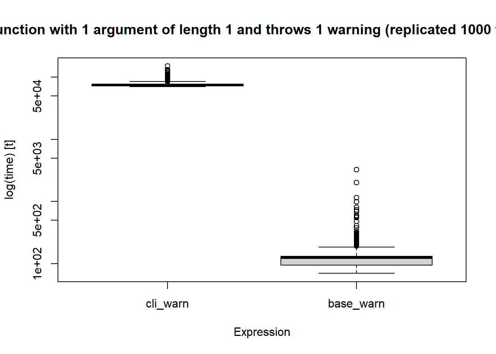
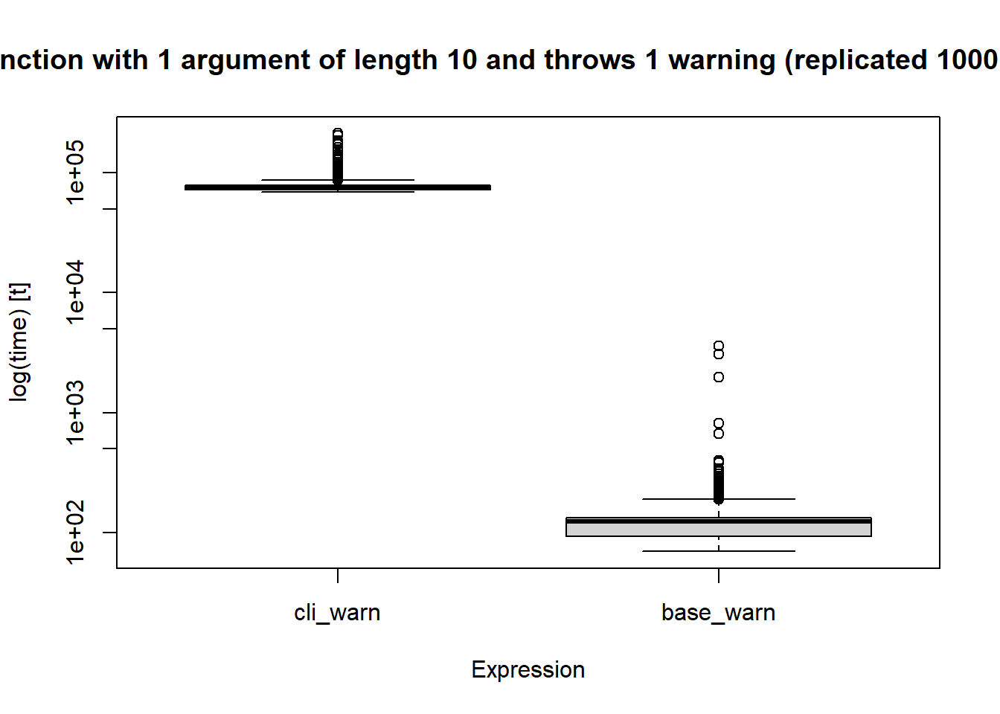

library(microbenchmark)
library(cli)
library(checkmate)Benchmarking as a tool for R package design decision-making
An example with base::warning() vs cli::cli_warning()
Motivation
User-facing design decisions in R package development are often with good intent but could have unintended negative impacts on user experience.
In simulation studies, functions are often run multiple times and run times are important. In more advanced set ups, simulation functions are configured to run over multiple cores of a PC or on a High Performance Computer, so differences in speed are not noticeable.
Here, we demonstrate how a simple decision about whether a function should throw a warning or an error in non-fatal events could have a major impact on the function’s run time on a computer.
Example: warnings vs errors
We consider an example where a developer has to decide whether to throw warnings or errors in some non-fatal events.
An example can be found in Epiverse’s bpmodels package where a function was previously throwing an error for a disallowed combination of arguments but was later changed to throw a warning. As part of the change the wrongly specified argument would be fixed internally with a warning to inform the user of what has happened.
This decision was intended to improve user experience. However, it also meant that in a situation where this happens at scale, the warning would be thrown as many times as the number of simulations unless it is fixed.
Throwing warnings can be useful so as to allow the function to run smoothly, especially if an action (for example, certain combinations of arguments are not allowed but not fatal). In a situation where a function throws a warning and is often run multiple times, it would be important that this event does not slow down the the process at scale.
Here, we will demonstrate that such a decision can be driven by data generated from benchmarking.
Experiment: throwing warnings with base::warning() vs cli::cli_warn()
Let us benchmark a function that uses cli::cli_warn() vs base::warning(). Here, we choose cli::cli_warn() because it has well adopted in the developer community as an alternative to base::warning(). Moreover, cli helps to provide useful feedback to the user and can be easy and fun to use as a developer when they get a hang of it.
Set up
We will define a function that takes an input, which is expected to be an integer, else a warning is thrown. For the purpose of this exercise, we assume that a non-integer input is not preferred but is not fatal.
Based on this description, we will need 2 main packages, cli for the function in question here and microbenchmark](https://cran.r-project.org/web/packages/microbenchmark/index.html) to measure the run times. We will also use an optional one, checkmate to validate the input, however, the reader may write their own checks and avoid taking on checkmate as a dependency.
Let us load the packages
Now, let us set up the two variant functions
Function using base::warning()
Let us define a function to throw a warning using base R, if an input is not an integer.
base_warn_bmrk <- function(x){
if(!checkmate::testInteger(x)){
warning("x must be an integer")
}
}Let’s test base_warn_bmrk().
base_warn_bmrk(x = 1.2)Warning in base_warn_bmrk(x = 1.2): x must be an integerAs we can see, it works as expected.
Now, let’s define a function to throw a warning using {cli_warn}, if an input is not an integer.
Function using cli::cli_warn
cli_warn_bmrk <- function(x){
if(!checkmate::testInteger(x)){
cli_warn(c(
"x must be an integer",
"i" = "x is currently an {.cls class(x)}",
"x" = "x is not an integer"
)
)
}
}Let’s test cli_warn_bmrk():
cli_warn_bmrk(x = 1.2)Warning: x must be an integer
ℹ x is currently an <class(x)>
✖ x is not an integercli_warn_bmrk() also works as expected.
Now, to the fun part, let us run the two functions 1000 times and plot the results.
Results
Here, as we know the functions will throw warnings, we will suppress them to avoid cluttering this article with their outputs.
reps <- 1000
input_vec <- 1.2
bnmrk_df <- microbenchmark(
cli_warn = cli_warn_bmrk(x = input_vec),
base_warn = base_warn_bmrk(x = input_vec),
times = reps
)
boxplot(bnmrk_df)
title(paste("Functions with vector of length 1, and replicated", reps, 'times'))
We can see for this simple example that cli::cli_warn() was \(100\) times slower on average than base::warn().
Let us try this with a mixed vector of length \(10\) and see how that scales up.
set.seed(123)
reps <- 1000
input_vec2 <- c(runif(5, 0, 10), sample.int(6, 5))
bnmrk_df2 <- microbenchmark(
cli_warn = cli_warn_bmrk(x = input_vec2),
base_warn = base_warn_bmrk(x = input_vec2),
times = reps
)
boxplot(bnmrk_df2)
title(paste("Functions with vector of length 10, and replicated", reps, 'times'))
Conclusion
In designing R package infrastructure, it is important that the developer(s) considers the impact of certain dependencies. Here, we have demonstrated how a simple decision to use cli::cli_warn() to throw warnings could affect function run times if it will be used in a multiple run set up.
The demonstration here can be extended to other design decisions and we recommend benchmarking as a way to help the developer decide on their options.